• Waterproof :These gloves are waterproof, making them perfect for fishing and other outdoor activities in wet conditions.
• LED Fingerless Design :The LED fingerless design allows for easy use of fishing gear and other tools while still providing protection from the cold.
• Multi-Functional :These gloves are not just for fishing, but can also be used for camping, hiking, and other outdoor activities.
• Durable :Made with high-quality materials, these gloves are built to last and withstand the wear and tear of outdoor activities.
Features:
1. 100% brand new and high quality.
2. This product is very small and light, simple to use, can make full liberation of your hands.
3. It is very convenient for outdoor activities: fishing / cycling / camping / hiking, or repairing/working in the dark.
Specifications:
Material: Spandex + Cotton
Color: Black only
Characteristic: Waterproof
Net Weight: 19g
Battery: 2 * CR2016
Mode: Left Hand, Right Hand
Size:
Forefinger about 4.5cm/1.77"
Thumb about 3.5cm/1.38"
The distance between two fingers about 7cm/2.76"
Package Includes:
1 x Fishing Gloves
Notice：
1. Please allow the size of a little error, because it is manual is measured, but will not affect the use, wish you happy shopping
2. Due to the differences between different monitors, or the shooting light and angle pictures may not reflect the actual color of the item, but the difference will not be great, thank you for your understanding
3. If you are satisfied with our products and services, please leave a positive feedback, I wish you a happy day!
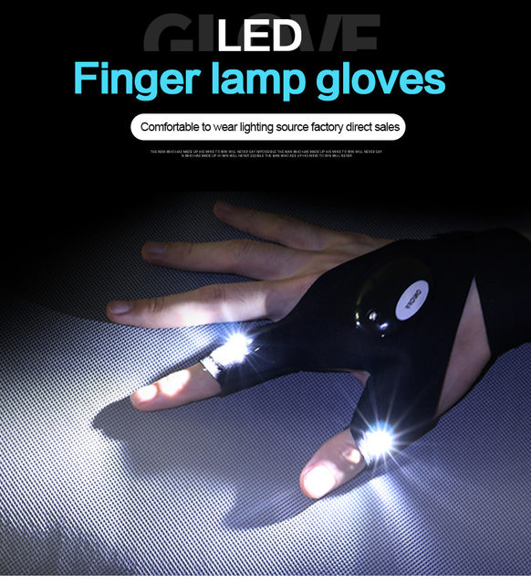
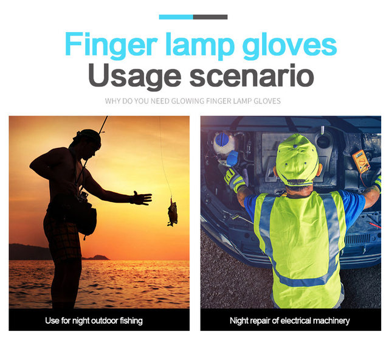
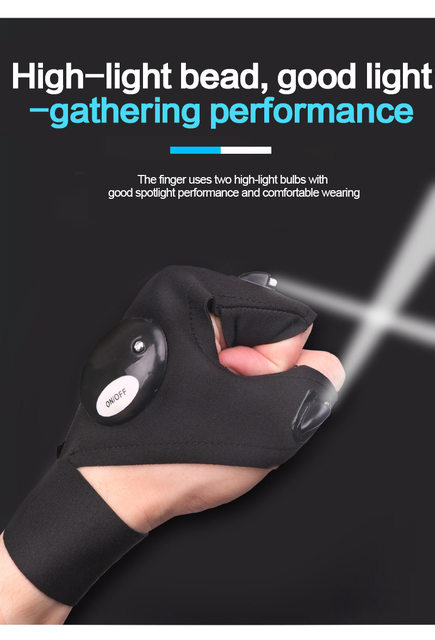
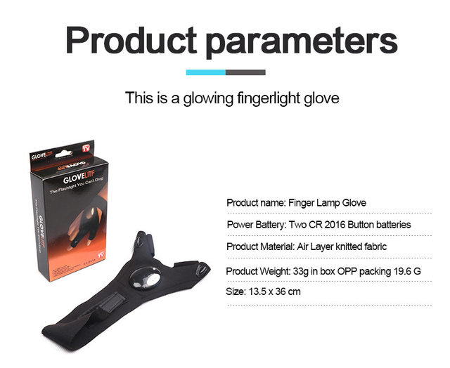
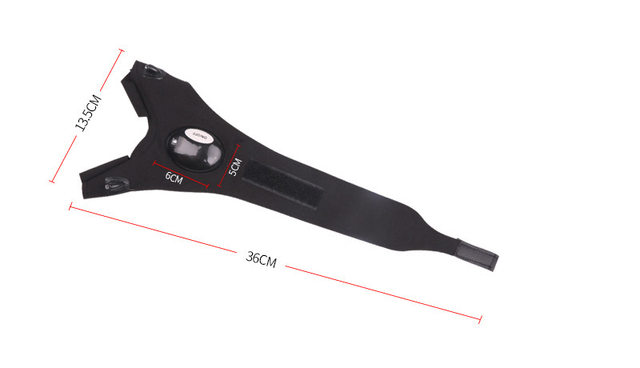
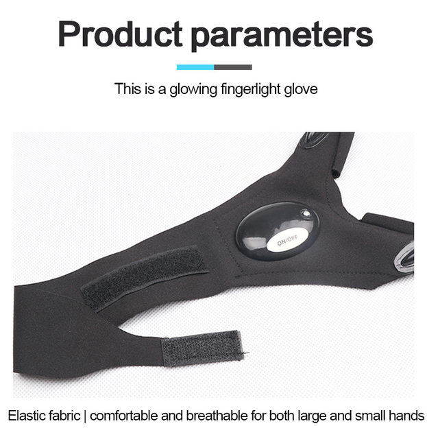
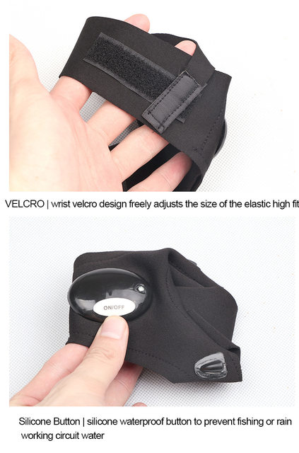
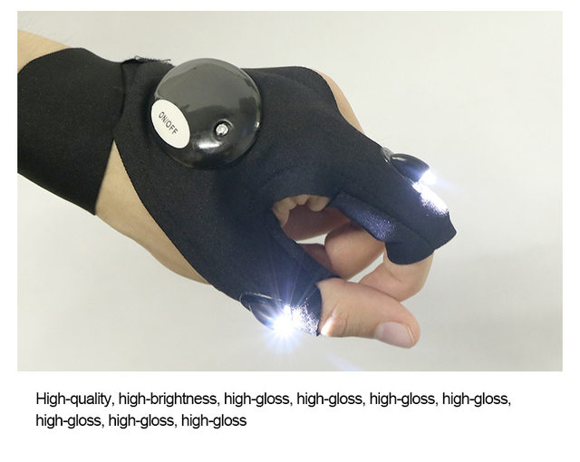
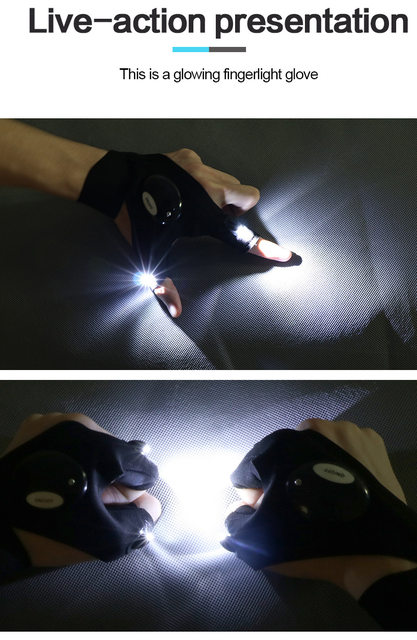
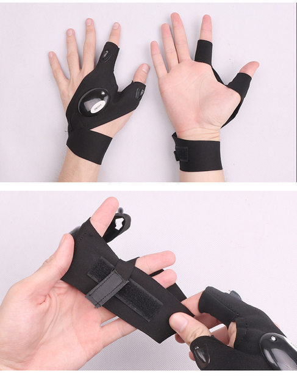
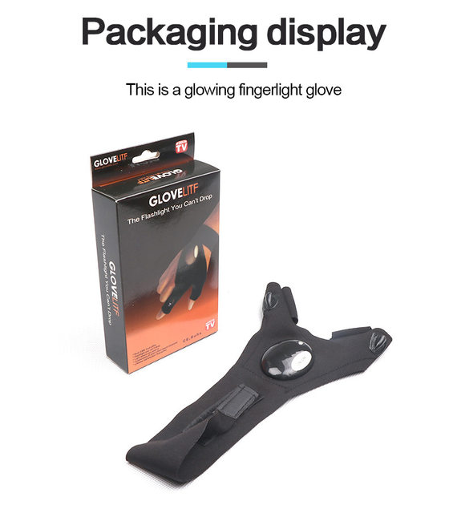